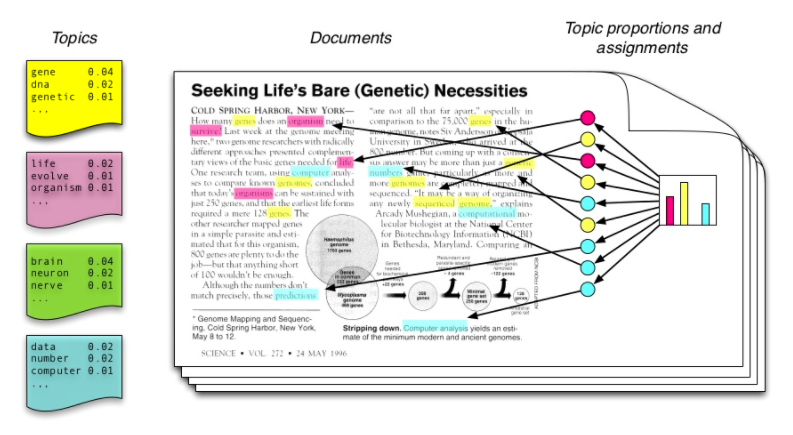
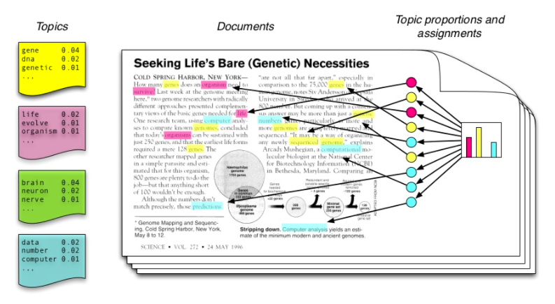

Generative Modelling with Empirical Distributions
Ambrish Rawat, Mathieu Sinn
IBM Research Dublin
Why do we study Generative Modelling?
- The "create to understand" school of thought
- Wide range of applications have benefited from it
 
... Speech Synthesis, Topic Modelling, Population Genetics ...
How do we approach it?
Let's take an example
\begin{align}
\end{align}
How do we approach it?
Let's take an example
\begin{align}
z_n &\sim \text{Multinomial}(z_n|\pi)
\end{align}
How do we approach it?
Let's take an example
\begin{align}
z_n &\sim \text{Multinomial}(z_n|\pi)\\
x_n &\sim \mathcal{N}(\mu_k,\Sigma_k)
\end{align}
How do we approach it?
Let's take an example
\begin{align}
z_n &\sim \text{Multinomial}(z_n|\pi)\\
x_n &\sim \mathcal{N}(\mu_k,\Sigma_k)
\end{align}
Maximise the log likelihood with respect to observations
How do we evaluate our model?
Strategy 1: Try to explain some held out data
...compute log likelihood of test set...
How do we evaluate our model?
Strategy 2: Generate samples and compare them
...density comparison...
How do we evaluate our model?
Strategy 2: Generate samples and compare them
Do we really need an explicit distribution for comparison?
How do we approach it?
Let's take an example
.. leads us to Implicit Models
What are Implicit Models?
- Learning only
Slide 2
Hi
$$ \int \sum e_i \otimes k(x, \cdot) $$More Complicated
\begin{align}
f &= \sum_{j=1}^{12} j e^{\pi \mathbb{i}} \\
&\fragment{3}{= -\sum_{j=1}^{12} j} \\
&\fragment{5}{= - \frac{12}{2} (12 + 1)} \\
&\fragment{6}{= - 6 \cdot 13} \\
&\fragment{7}{= -78}
\end{align}
Remember:
$e^{\pi \mathbb{i}} = -1$
$\sum_{j=1}^b j = \frac{b (b + 1)}{2}$